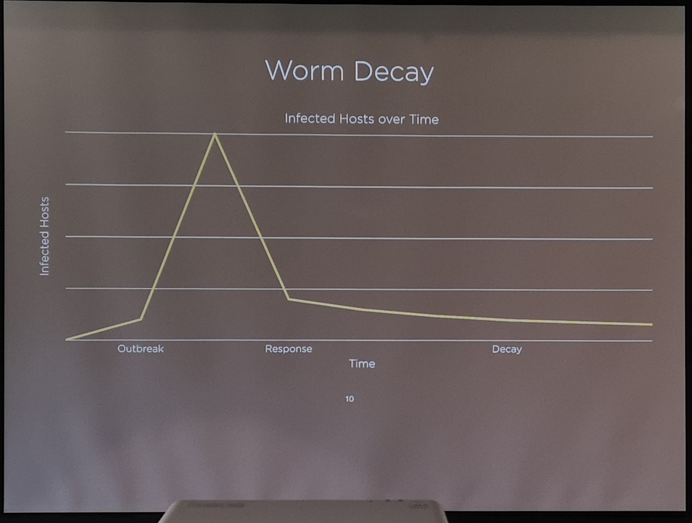
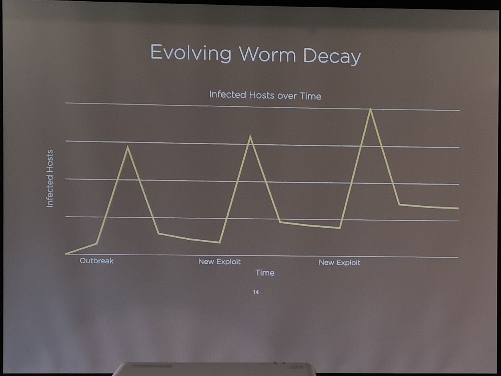
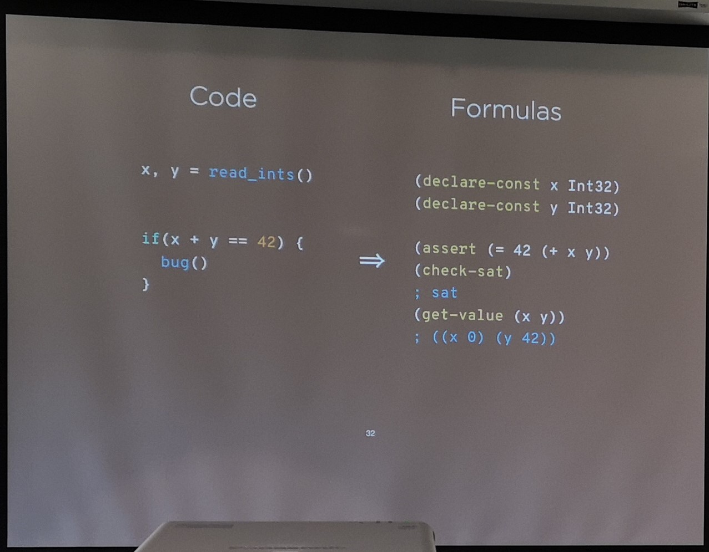
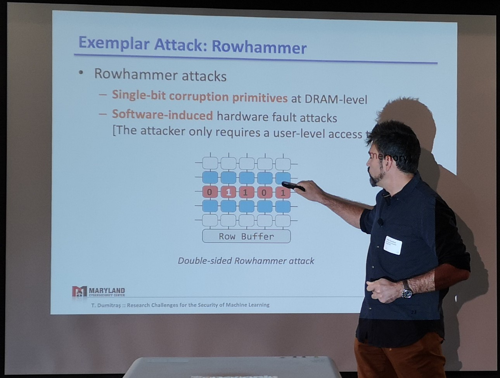
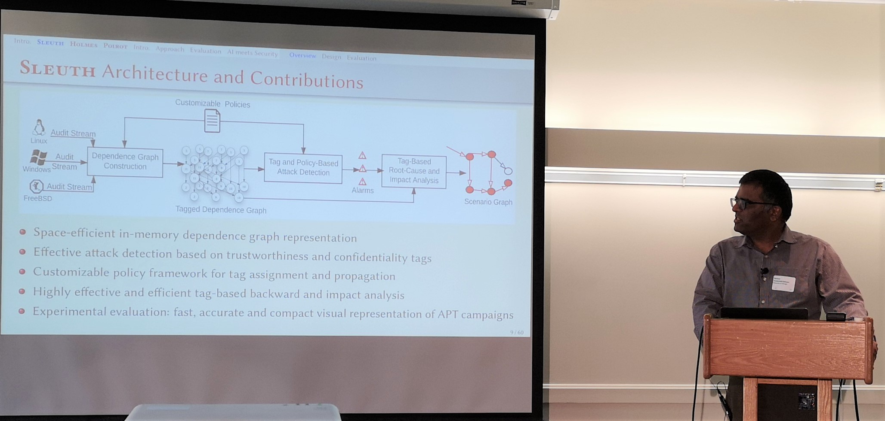
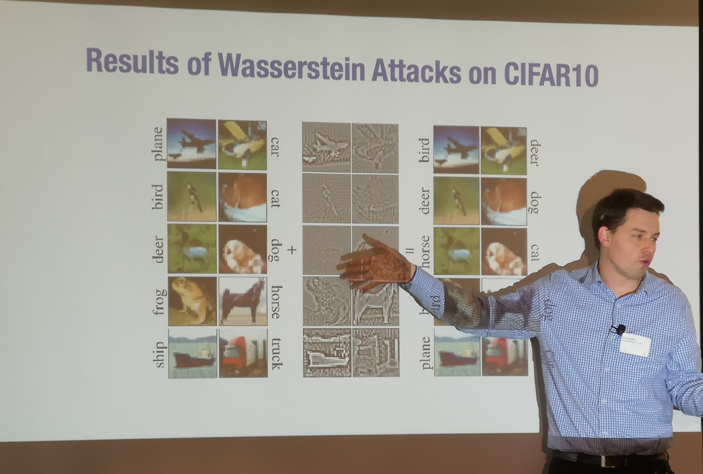

# AI Security Symposium -- IBM AI Week
## Session 1: Cybersecurity and AI
### Cyber grand challenge winner -- Alex Rebert
https://forallsecure.com
- Wanna Cry -- encrypts all your files and asks you for money (ransomware)
- They impacted UK's health care
- Wanna cry is not a sophisticated attack. Now even a nation-state level attack. They used a public exploit EternalBlue. Microsoft had a patch released 2 months before the attack got used. Individuals would have been able to do this!
- Has attacked Boeing recently.
- Worms are primitive artificial life forms with fixed capabilities. Previously, they did not evolve.
<p></p>
- If they do, they can re-investing profit to acquire new capabilities. Evolving worms can have much more impact.
<p></p>
- Autonomous Hacking
- Cyber grand challenge.
- Mayhem-- For All Secure
- Offense
- Bug finding is simply a search problem in the space of inputs. Two types
- Fuzzing-- randomly generate inputs and try it on an execution code. It is an evolutionary algorithm. Population of test cases. Fitness function encourages executing new code paths. Code coverage feedback encourages incremental improvements. Icamtuf, 2014
- Symbolic Execution-- Code --> logical formulas --> SMT solvers (example from code to sat formulas). Mayhem project found 13,875 bugs in Debian
- Strategy -- What and when to patch? Who to attack?
<p></p>
- Strategy is trailored to a reward system.
- Offensive Strategy (Attack all the time)-- High negative reward for being attacked.
- Defensive Strategy -- Patch if you detect that someone exploited you. Early patching impacts performance.
- Multi-agent imperfect information game -- hard to solve
- Used bayesian estimates-- estimate $p(exploit|patched)$, prior is $p(exploit)$, visible info is $p(patched)$.
- Improving Security
- AI against AI -- Human's can't keep up with the amount of code being produced.
- Automating computer security is the only way (preaching to the choir)
- Software Component Analysis like dependabot
- Static analysis -- LGTM.com (Scans source code; uses CVE info to develop attacks against this code)
- Continuous fuzzing
- 70% are memory safety issues (MSI)
- Google's Fuzzing bot's discovered vulnerabilities are MSIs. A lot of code bases are in C!
- Wack-a-mode or MTD (address space randomization) makes it harder for an attacker to exploit this.
- Microsoft might use Rust
- Add mitigations to C
- Preparing your app to work with pointer authentication
- Don't use C/C++ if you don't have to. We would be much safer!
- Eliminated the long tail of insecure devices
- Malware leverages crappy devices to acquire power and money
- How to empower consumers to make secure decision
- Cyber -til- (https://cyber-itl.org/)
- Q/A:
- Infer patching strategy of other teams.
- [Rajeev Agarwal, Una May O'Riely] Reconfiguration or structuring network given existing traffic data so as to (1) get better data in the future and (2) come up with better defense strategy.
- Are we only detecting (or good at detecting) memory attacks? Are their other attacks which we are not aware of?
### Research challenges for Security of ML Systems-- Tudor Dumitras, UMD
http://www.umiacs.umd.edu/~tdumitra/
- West world + Mr Robot (collab with Geong)
- What could go wrong?
- Historical Analogy
- Malware Detection -- Static analysis, behavioral features, automatic signature generation, delivery, reputation
- No algorithm can detect all possible viruses [Cohen, 1987]
- No robust features (on going debate for computer vision)
- Anti malware programs disagree and evolve-- imperfect oracles (ground truth is noisy)
- There is no clean data-sets
- What can the lessons in cyber-sec teach us about AI
- Explained what is adv perturbation (eg. panda + adv noise is predicted as gibbon)
- Influence: Causative (poising); Exploratory (evasion)
- Specificity: Targeted, Indiscriminate
- Most attacks are presently exploratory. Lesson one: poisoning attacks are realistic. (Do people think it is hard to corrupt real data).
- Trojan attack [Liu+ 2018]-- add attack trigger to a set of training images
- What if adversary cannot mutate the target? Simple idea: Inject a target with a flip label (or incorrect label). In practice, adversary might not be able to control the label.
- Guess label, inject near target (Are the poison instances outliers? Do they bypass existing anti poison defense (RONI, SEVER)
- Filter out Detectable Instance.
Adversary cannot control labelled (clean label), individually inconspicuous (no outliers), collectively inconspicuous (no collateral damage)
- Clean label poisoning. Find poison examples close to the incorrect classes and has features of the other class. [Suciu+, Usenix security 18], poison frogs [Shefahi+ nuerIPS'18]
- Adversaries can control training inputs. Federated Learning (Gboard). Poisoning for other adv goals (inject to compromise privacy).
- Consider all possible attack vectors (hardware fault injection; http://hardwarefail.ml)
- Rowhammer-- Single bit corruption primitives at DRAM Level; software induced hardware fault attacks-- Explained with a small example for a double-sided rowhammer (add image).
<p></p>
- Deep neural nets are know to be insensitive to structural changes (Optimal Brain Damage [Lecun+ NeurIPS'89]) -- Parameter pruning [Li+ ICLR'17], parameter quantization, blenn noise to parameters -- Hard to degenerate the accuracy. Indiscriminate poisoning (11% drops), storage media errors (5% drops), hardware fault attacks (7% drop)
- What worst change can be caused by changing a single-bit (figuratively) in the DNN?
- Change some bits in the saved weights + bias (floating) -- 5% drop (random) -- Target most significant bit flip of the w and b (41% drop) [USENIX security'19] -- Dropout does not help -- Vulnerability increases with depth -- Vulnerability in teach model translates to a vulnerability in student model.
- Rowhammer does random flipping. Blind Rowhammer -- Cannot control location of the flip and thus, tries multiple times. Results on 12 DRAM chips. 6 crashes in 7500 bit-flip attacks (crash can land up in detecting attacks).
- Rowhammer's ideal attack muse may be DNN
- Adversarial Thinking can lead to broader insights (http://shallowdeep.networks)
- Implement MTD -- address space randomization
- MTD for neural networks (http://shallowdeep.network [ICML'19]) -- Changes internal layers of the networks.
- Adds internal classifier layers to off-the-sheld DNN models (Feature reduction layer after convolution layers that are used for internal prediction) [https://arxiv.org/abs/1810.07052]
- Has not yet been able use MTD for DNNs (send him [our MTDeep paper](https://arxiv.org/abs/1705.07213)-- he noted my name)
- Trojan introduces confusion in the internal layers.
- Fuzzing to use implementation bugs
- Q/A
- Transferabiliity -- Doesn't know yet. Said he would be happy to chat.
- Integrity in the context of neural network.
### Venkat Venkatakrishnan
- Detecting Advance Provenance Threat (APTs)
- State of the art in Intrusion Detection
- Security Information and Event Management; IDS; Application firewalls
- Prevonance Graphs - vertices (socket, files, mem) and agents; edges (relations between the nodes)
- Scalability is an issue.
- Information is coarse. Graphs learnt from these may contain huge amount of unnecessary data.
- Sleuth
- Trustworthiness tags, confidentiality tag etc assigned to nodes of the graph. Policy for firewall, etc. are based on these tags. Initialized tags can be propogated.
- Attack detection using provenance tags-- Application independent
- Untrusted execution, suspicious modification, data leak, untrusted execution preparation
- Where to get this data? Red team produces attacks. Data given to performers being funded by DARPA.
- Backward analysis to identify the entry point of an attack.
- They found 174 attacks (15 false positives, 1 false negative)
<p></p>
[Battery about to run out; should have got my i-pad + keyboard]
- [HOLMES paper](https://smomen2.people.uic.edu/publications/HOLMES.pdf)-- Goes from data to rules for detecting APTs.
- Poirot (To appear in CCS)
## Session 2: Security of ML algorithms
Three classes of attack-- Poison training data and corrupt models, steal trained data and trained models, evade detection by fooling models. We need data integrity, model security and application security.
### A new perspective on Adversarial Perturbation -- Alexander Madry
- Deep learning has made impressive progress in some of the key benchmarks in ML (vision, nlp) and AI (go etc.)
$$ min\_{\theta} ~\mathbb{E}\_{x,y \in D} ~[max\_{\delta \in \Delta} l(\theta; x+\delta, y)] $$
- We know what and how it is happening. But why are they happening?
- Why are our models brittle?
- Natural consequence of the fact that our models are in a high dimensional data.
- We expect them to be good on average but ignore worst case.
- Because we are using ResNet, batch norms, god is punishing us! :P
- Unifying theme: Adversarial examples are an aberration
- Why are adversarial perturbation bad? -- Dog + meaningless perturbation becoming cat vexes us because it is a human perspective.
- Model has no notion of what an image is. Also, it has no idea of what a 'dog' is. Loss functions don't incentivize it to understand it.
- Is the perturbation actually meaningless for the neural network.
- Obtain adversarial example, Make a training set where adversarial example (dog + adv perturbation) is labelled as the incorrect class. Train a DNN and test on original set. Gets non-trivial (78%) accuracy. Realize that a human, who has not seen a dog/car before, would have obtained 0% on the test set.
- Model has not incentive to use Robust features (humans understand). It can simply use non-robust features (humans don't) as long as they are correlated to the accuracy.
- Only using non-robust features gets you an accuracy of 78% Using both gets you more accuracy.
- Adversarial examples are a human phenomenon
- No hope for interpretable models without intervention at training time.
- Why do adversarial perturbations tend to transfer?
- Adversarial perturbation = altering non-robust features
- Features are a property of the data-set. If models have to get high accuracy, they have to use all the non-robust features. Thus, adversarial perturbations that manipulate this non-robust features, will effect all models (has some experiment with ResNet and other models. Check that.)
- Why does robust training works?
- Outer maximization
- Why randomized smoothing works?
- Zico's talk
- What happens when you try to train models with only robust features?
(http://bit.ly/robustness_demo)
- Need more data to get a given (robust) accuracy
- Will get a lower standard accuracy
- Robustness = perception alignment-- features that influence the class label are the ones that to only pixels related to the dog and not other pixels.
- Direct feature manipulation (add a particular robust feature, say strips to the generated image of a horse)
- Why did a particular mis-classification happen? (image showing ants are arranged in a way that shows there is a dog in the top left corner)
### A Marauder's map of Security and Privacy in ML -- Nicolas Papernot
https://arxiv.org/pdf/1811.01134.pdf
- Data poising, data privacy, model theft and adversarial examples attack.
- Is the ML fundamentally different in a way that enables systematic approaches to security and privacy? (no needs of arms race if we can clearly define a game and the action spaces they can take. Eg cryptography, before formalism of adversary models and capabilities, has a cat-and-mouse phase.)
- Saltzer and Schroeder's principles (mostly explained via examples)
- Fail safe default-- If you think your model is begin used in ways beyond the plan use-cases, implement a fail safe option (no comments). Eg. do not output low-confidence predictions at test time. Although this does not prevent an adversary from generating attacks that make a model misclassify with high confidence, it increases their cost of coming up with such an attack (as opposed to just making the model misclassify). Online data-poisoning can be fixed by detecting distributional shift (compare current batch to existing batch on accuracy).
- Security should not depend on the secrecy of your model-- Insider leaks, reverse engineering. In ML, there also exist ways to distill blackbox classifiers and transfer attacks form the distilled model. Methods like gradient masking can also be evaded. (Unless we can prove, similar to cryptography, that a particular secrecy parameter can guarantee security, it probably isn't.)
- Separation of privilege-- Eg. federated learning where multiple clients compute model updates on their own and provide an aggregated overview. (Did not understand fully. But then, how much do I know about Federated learning!)
- Work Factor-- Watermarking (defender inserts patterns in data to detect model theft) vs. backdoor insertion (attacker inserts backdoor to make the model misbehave on certain inputs). The question is who commits first (attacker or defender)? Currently, going second is better because removing watermarking or backdoor is easier to do.
Also, CAPTCHAs is not valuable because low cost of human labor can be used to bypass it (when ML algorithms fail to break it).
- Psychological acceptability -- people should be able to understand it (to what technical level?). Otherwise, they will not use it. Eg. differential privacy -- Can an attacker detect whether data record corresponding to a particular individual was used in the training set? If not, differential privacy is achieved. Although differential privacy can be achieved by a simple modification to SGD to (eg. change a line of code. [Abadi+ CCS, 2016](https://arxiv.org/pdf/1607.00133.pdf)), it is difficult for end users to understand what is happening. (Guessing they saw that adoption was limited?)
```
optimizer = DPGradientDescentGaussianOptimizer(
l2_norm_clip=FLAGS.l2_norm_clip,
noise_multiplier=FLAGS.noise_multiplier,
learning_rate=FLAGS.learning_rate
)
```
They introduced [PATE : Private Aggregation of Teacher Ensembles]() with psychological acceptability in mind. Distinct partitions of sensitive data into n partitions. Ensemble $n$ models, each trained on only one partition. Aggregate predictions:
- Count votes, take max. Privacy if all teacher's agree. But corner cases where there are two classes with almost similar number of votes, changing one record from one partition to another can flip the final predicted class, leading to loss of privacy. Can be prevented by adding noise to the histogram of votes (add Laplacian Noise, then take maximum). (_how is this related to randomization at test time, especially in the context of evasion attacks?_ Eg. [MTDeep](https://arxiv.org/abs/1705.07213))
- More principles can be found at https://arxiv.org/pdf/1811.01134.pdf
- Privacy and Generalization (missed this part because a rat roaming around the room distracted me.)
- Model assurance (train time) and Admission control (test time)
- Model assurance-- Metric similar to code coverage in software development would help. Line coverage would be hard to do in ML. People have looked at neural coverage (neurons that got fired given a particular input), activation vector distance. Said something about capsule activity vectors. Also, one needs to overcome vocabulary differences to even understand whether these metrics are useful.
- Test time admission control-- Deep learning deployed in setting that have weak authentication. Thus, need sandbox models to ensure whether we should accept and input-output pair.
- Deep k-nearest neighbor-- Estimate support in the training data that contributed to a prediction. Look at k-nearest activations at each layer of the neural network. If support is good, prediction is given.
- Soft nearest neighbor loss-- Weighted loss to encourace different classes to be close together (_how is this related to our weighted loss function [workshop paper](https://sailik1991.github.io/files/aaai_wlf_bounded_misclassification.pdf) for thwarting noisy or adversarial examples?_)
- LP-norm ball will reduce the accuracy of the model (makes it vulnerable to misclassify newer attacks, which is basically inputs from a different class).
### Provable adversarial robust models-- Zico Kolther
- How to build a robust classifier.
- Normal classification objective
$$ min\_\theta ~E\_{(x,y) \in D}~ l(\theta; x+\delta, y) $$
- Robustness optimization objective
$$ min\_\theta ~E\_{(x,y) ~ D}~ [max\_{\delta \in \Delta} l(\theta; x+\delta, y)] $$
- Adversarial training does exactly this [Goodfellow+ 2015, Kurakin+ 2016, Madry+ 2017]
- Certified/Provable defenses-- Wong+ 2018, Ragunathan+ 2018, Murman+ 2018, Cohen+ 2019 -- This has to constrain the ways in which an adversary can come up with an attack.
- Two ways to effectively find an upper bound on the loss value
- Robustness via convex relaxations
- L-inf ball around examples and pass it through a trained deep network results in irregular shaped polygons on the output image.
- Outer bound the adversarial polytope-- Make a convex (outer) bound around these irregular shapes. Find adversarial examples that (by solving linear program) that lie just outside the convex region.
- Use ReLU with lower bound (l) and upper bound (u). (Write lp that can solve the adv sample generation problem).
- Error of CIFAR-10 is bound to 46% under adversarial attack where pixel values are at max altered by 2/255. For empirical attacks (Adv training with PDG), this is 28%. New work tried to do tighter convex or non-convex boundary.
- Randomized smoothing
- Train classifier on randomly added noisy images.
- Convex relaxation methods were too particular about activations (relu) and neural network architectures. Randomized smoothing can use any classifier f, even if it is not a DNN. He believes there has to be a middle ground.
- Wasserstein distance captures more semantics of the image to create attack perturbations. Note that they might not still be able to make the final image look different. (Given that these adversarial pertubations looks so aligned with objects in the image, can one use this for image segmentation?)
<p></p>